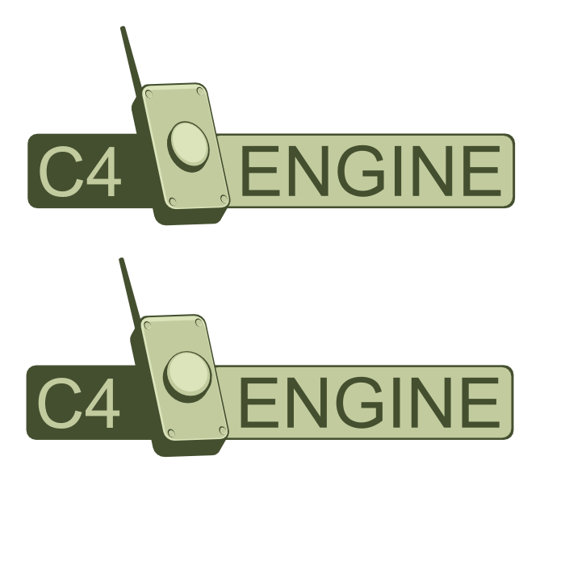

This is my first attempt to the C4 logo, I'll try some variations and colors latter,

Mario
 by smariobros » 11 Sep 2009, 12:32
by smariobros » 11 Sep 2009, 12:32

 by Nilithius » 11 Sep 2009, 15:21
by Nilithius » 11 Sep 2009, 15:21

 by Boxsmith » 11 Sep 2009, 16:41
by Boxsmith » 11 Sep 2009, 16:41
seryu wrote:
Im using letters with "debris" as if they were affected by an explosion.

 by Darth Vador » 11 Sep 2009, 17:29
by Darth Vador » 11 Sep 2009, 17:29
 by Eric Lengyel » 11 Sep 2009, 17:34
by Eric Lengyel » 11 Sep 2009, 17:34
Darth Vador wrote:By "stealing an idea", I meant "substantially copying the design of".
Now I'm not entirely sure what you mean. If you mean a Ctrl-C + Ctrl-V parts of a photo, then that's copyright infringement. However if you produce a look a like --even if it's almost a twin, as long as it was reproduced --not copied-- would fall under trademark infringement. It would be like taking a painting and repainting it with your own brush -- which is legal from a copyright infringement (however you'd run into issues with Trademarks like the signature and the painting as an idea).

 by Zahl » 11 Sep 2009, 17:46
by Zahl » 11 Sep 2009, 17:46
 by Amo » 11 Sep 2009, 17:48
by Amo » 11 Sep 2009, 17:48
 by a2k » 11 Sep 2009, 17:52
by a2k » 11 Sep 2009, 17:52
Nilithius wrote:I found an article that does a good job explaining logo design principles:
http://justcreativedesign.com/2009/07/2 ... good-logo/
And another explaining the process...
http://www.webdesignerdepot.com/2009/02 ... onal-logo/
 by Boxsmith » 11 Sep 2009, 18:48
by Boxsmith » 11 Sep 2009, 18:48

 by Eeyore » 11 Sep 2009, 19:14
by Eeyore » 11 Sep 2009, 19:14
Boxsmith wrote:That's not too bad. Not to my taste as my own ideas probably suggest though -- grunge brush abuse has no place in a logo IMO.
 by semajhs » 11 Sep 2009, 19:20
by semajhs » 11 Sep 2009, 19:20
Boxsmith wrote:A more refined idea:
EDIT (again): Does the top or bottom look better to you guys?
 by Boxsmith » 11 Sep 2009, 19:23
by Boxsmith » 11 Sep 2009, 19:23
lazarus wrote:From that perspective EA has a good logo, so does sony, off the top of my head. All the game engine logos such as unreal and valve posted here are just terrible, though. Espcially unreal's dopy symbol. Unreal is a high tech engine, their actual game assets and artwork seems to be uniformly horrible.
 by JohnClay » 11 Sep 2009, 19:42
by JohnClay » 11 Sep 2009, 19:42

 by Boxsmith » 11 Sep 2009, 19:58
by Boxsmith » 11 Sep 2009, 19:58
 by ska » 11 Sep 2009, 20:04
by ska » 11 Sep 2009, 20:04
 by JohnClay » 11 Sep 2009, 20:07
by JohnClay » 11 Sep 2009, 20:07
Boxsmith wrote:Giving the explosion thing a try.
I'm not sure if I like this much, though.
 by Boxsmith » 11 Sep 2009, 20:18
by Boxsmith » 11 Sep 2009, 20:18
JohnClay wrote:It's an improvement I think...
 by wtblife » 11 Sep 2009, 20:19
by wtblife » 11 Sep 2009, 20:19
Boxsmith wrote:Giving the explosion thing a try.
I'm not sure if I like this much, though.
 by JohnClay » 11 Sep 2009, 20:28
by JohnClay » 11 Sep 2009, 20:28
 by Nilithius » 11 Sep 2009, 20:30
by Nilithius » 11 Sep 2009, 20:30
a2k wrote:Thank you for posting this. These are exactly the types of things I'm referring to. I would highly recommend these sorts of general guidelines if entrants are serious about making a successfully identifiable logo for C4 Engine, and if the community is serious about judging a good looking logo. Of course this is a contest, so there are no rules in this regard, but I want C4 to thrive as much as the next community member.
Zahl wrote:I'll just leave this here...
Eric Lengyel wrote:No, copying a picture/image/figure by redrawing it can fall under copyright infringement. I've seen this used as the basis for successful prosecution in the book printing business several times when people redraw figures that end up looking substantially similar.
lazarus wrote:Looking at logos for console systems is much likelier to pay off because they know how to market and have serious budgets.
Boxsmith wrote:EDIT (again): Does the top or bottom look better to you guys?
Boxsmith wrote:I'll see what I can do with the font though.
 by Boxsmith » 11 Sep 2009, 20:33
by Boxsmith » 11 Sep 2009, 20:33
wtblife wrote:After the new logo is chosen I think the site needs a makeover.
Nilithius wrote:Try a military theme - perhaps a stencil font? I've got over 2,000. I could you some... or all...
 by caldoer » 11 Sep 2009, 20:34
by caldoer » 11 Sep 2009, 20:34
 by Boxsmith » 11 Sep 2009, 20:46
by Boxsmith » 11 Sep 2009, 20:46
caldoer wrote:Boxsmith, I liked the green version- I'm curious what it would look like with a few *signal* lines radiating out from the top of the antenna to indicate something going on.
 by caldoer » 11 Sep 2009, 20:51
by caldoer » 11 Sep 2009, 20:51
Boxsmith wrote:caldoer wrote:Boxsmith, I liked the green version- I'm curious what it would look like with a few *signal* lines radiating out from the top of the antenna to indicate something going on.
Yeah, don't take the fire thing too seriously, just an experiment.
I'll give that a try, but to be honest I was going more for a tempting button that's waiting for you to push it than something already at work. Perhaps it'll look good though, we'll see.
Users browsing this forum: No registered users and 2 guests
| Company | Contact | Privacy Policy | Site Map | Copyright © 2001–2015 Terathon Software LLC |  |

)window.location=%27http://www.d2power.com/catalog/images/Toggle%20Switch%202.jpg%27){kind=link}